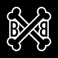
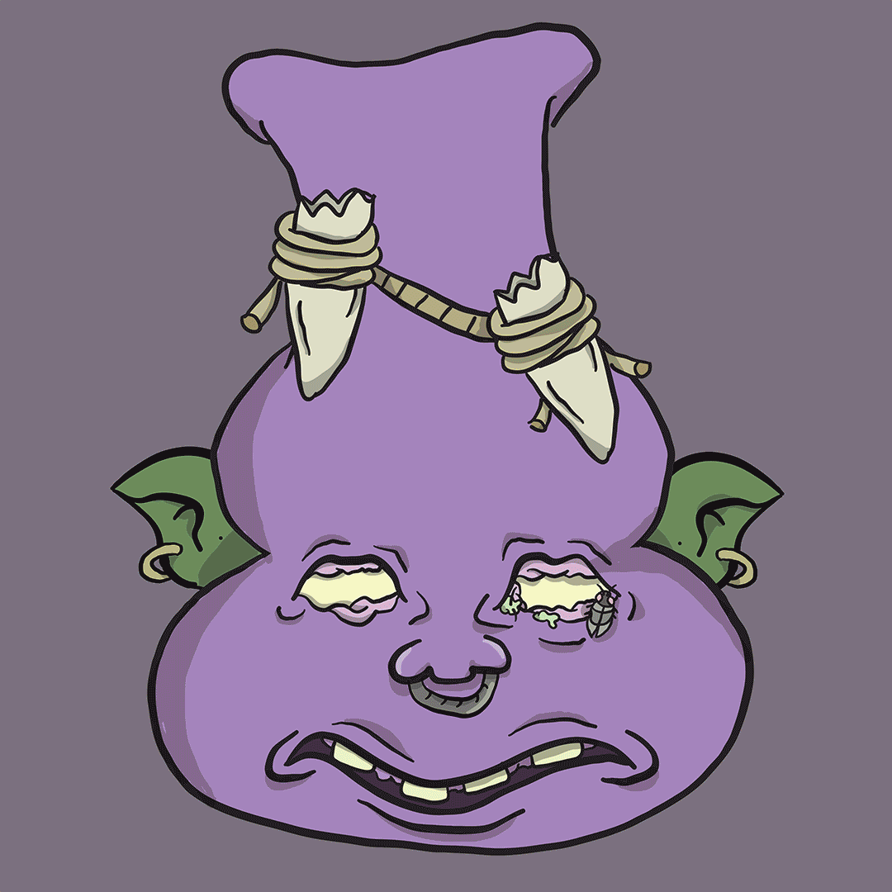
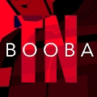
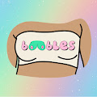
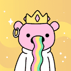
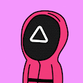
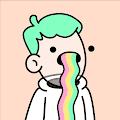

BOMB Money OG BOMB Money OG NFT - 问题常见（FAQ） ▶ 什么是BOMB Money OG？ BOMB Money OG 是一个 NFT（不可替代代币）集合。存储在区块链上的数字收藏品集合。 ▶ BOMB Money OG 代币有多
Bonalisa Bonalisa 意味着更好的蒙娜丽莎。我们相信这一点，因为艺术是狗屎。Bonalisa NFT - 常见问题（FAQ） ▶ 什么是博纳丽莎？ Bonalisa 是 NFT（非同质代币）集合
Bone Buddies 2000 个独特的收藏 NFT 的艺术策划图纸。每个 Bone Buddy 不仅为您提供了一个砰砰的 PFP，Bone Buddies NFT - 常见问题（FAQ）过去 7 天没有售出 Bone Buddies。我
BONE SOCIETY 快来加入 Secret Bone Society 多边形区块链上的 5000 个骨架 gif NFT 集合，BONE SOCIETY NFT - 问题常见（FAQ） ▶ 什么是社会？ BONE SOCIETY 是一个 NFT（不可替代代币）集合。存储在区
Boned Ape Yacht Club Boned Ape 游艇俱乐部是 1,000 个独特的 Boned Ape NFT 的集合。您的 Boned Ape 允许您访问由全球 1,000 名所有者组成的专属社区，以及访问 Metaverse 中的各种 Boned Ape 公共空间。每个 Boned Ape 都是一个完
Bones & Bananas 3D Airdrop Scott Jackson 合作创作的 3D 动画香蕉Bones & Bananas 3D 空投 NFT - 常见问题（FAQ） ▶ 什么是 Bones & Bananas 3D 空投？ Bones & Bananas 3D Airdrop 是一个 NFT（替代代币）集合。存储在区块链
 Boney BBs Boney BBs NFT - 常见问题（FAQ）过去 7 天没有售出 Boney BB。 ▶ 什么是Boney BBs？ Boney BBs 是一个 NFT（非同质代币）集合。存储在区块链上的数字收藏品集
 BongTown.wtf 欢迎来到邦敦！4,200 Bongs 的使命是与以太坊区块链上的所有城镇一起振兴！！BongTown.wtf NFT - 问题常见（FAQ）过去 7 天没有出售 Bon
bonhomme.lol Full Stack & Technical Lead – Everpress 链接至 Full Stack & Technical Lead – Everpress 带领一个由 5 名工程师组成的团队开发我们的创作者工具和电子商务应用程序。与产品负责人密切合作，跟踪我们的战术
 BOOBA - TN 5 张动画卡，每张都包含 TN 剪辑中的一系列图像，每张售价 5,000 份。您可以购买一个或多个。销售结束后，他们将让您独家访问 TN（由 Biscuit Studio 执导）的剪辑。您的
 Boobles by Sabre Boobles 是一个由女性主导的项目，由 5000 个独特的 NFT 组成，旨在促进女性在 NFT 领域的发展，同时回馈更广泛的社区。所有利润的 20% 通过女性慈善机构回馈给更广泛的社
 BoodleBears 🌈 欢迎来到宇宙中最多彩的星球 Boodleverse 🌈 🐻 Boodle Bears 是 Polygon 侧链上存在的 5000 个独特 Boodle Bears 的集合（购买或出售 Boodle Bears 时不收取汽油费！） 🐻 Boodle Bears 不隶属于涂鸦。BoodleB
 Boodles Club Boodles Club 收藏了 5,555 个。Minted Boodles 只会在每天结束时揭晓！Boodles Club NFT - 常见问题（FAQ） ▶ 什么是 Boodles 俱乐部？ Boodles Club 是一个 NFT（非同质代币）集
 Boodles Official 🌈 欢迎来到宇宙中最多彩的星球 Boodleverse 🌈 😺 提出要约，支付你想要的东西😺（第一次出价获胜）😺 Boodles 是 Polygon 侧链上存在的 10000 个独特 Boodle 的集合（购买或出售 Boodle 时不收取汽
BoodleTrans 🌈欢迎宇宙中最黑色的星球Boodleverse🌈 👩 出价，支付你想要的东西👩 （第一次出价计划）👩 👩 Boodle Trans 是 Polygon 侧链上存在 5555 个独特的 Boodle Trans 的集合
Boom Birds (Free Mint) ETH 区块链上 10,000 个独特的蓬勃发展的 PFP 的集合。Boombirds 为持有者提供支持社区的 Discord 服务器。我们称它们为 DEGENS - 因为，很明显。Boom Birds（
Boonies Skull 以太坊区块链上的 5555 个 NFT 集合。优质的艺术品和良好的氛围。Boonies Skull NFT - 问题常见（FAQ） ▶ 什么是 Boonies 头骨？ Boonies Skull 是一个 NFT（非同质代币）集
Bored Alligator Grill Club Bored Alligator 烧烤俱乐部是 Polygon 区块链上 10,000 个独特的 Bored Alligator NFT 的集合。！！无聊的问题俱乐部（NFT - 常见问题） ▶ 什么是无聊的烧烤俱乐部？ Bored Alligator Grill Club 是一个 NFT（不
Bored Ape Anatomy Yacht Club 无聊猿解剖游艇俱乐部是通过器官解剖的 8,000 只解剖凡人猿的集合。探索你的猿的真正由内而外。无聊猿导航俱乐部 NFT - 常见问题（FAQ） ▶ 什么是无聊的猿游
Bored Ape Basketball Club BABC 猿希望加入篮球场。 所有NBA球队都在这里。NBA Apes Club 有 22 眼睛、32 球队球衣、20 毛皮、38 帽子、21 运动衫、25 嘴。 拿起你的猿角色，永远生活
Bored Ape Cannabis Club 🦍 Bored Ape Cannabis Club 是一个衍生的 NFT 系列，结合了原始 Bored Apes 的艺术。该系列包含生活在 Polygon 区块链上的 2000 只完全独特的大麻猿。拥有该系列中的 NFT 可作为 Bored Ape Cannabis 社区成员的
Bored Ape Comic 无聊猿漫画#2 现已推出。问题由 10,000 个 NFT 组成，并包含一组无聊的猿。无聊猿漫画 NFT - 常见问题（FAQ） ▶ 什么是无聊猿漫画？ Bored Ape Comic 是一个 NFT（Non
Bored Ape Fantasy League Bored Ape Fantasy League (BAFL) 是第一个为 Ape 和 NFT 社区创建的梦幻足球联赛，它结合了当前 NFT 市场爆炸的快感和对梦幻足球的热爱。 凭借 Ape 社区的力量，BAFL 联赛为球队所有者
Bored Ape Football Club Official (BAFCO) 10,000 只无聊猿加入了你最喜欢的球队，在多边形区块链上踢足球。 选择你的球队并加入无聊猿足球俱乐部🏆 ⭐️ 这是一个独立的衍生项目 - 不隶属于 Yuga Labs 或 BAYC ⭐️
Bored Ape Impact Club V2 Bored Ape Impact Club，30个独特的NFT，此版本的持有者在索赔期到来时将获得以下Bored Ape Impact Friend产品：Bored Ape Impact Club V2 NFT - 常见问题（F
Bored Ape Mining Club Bored Ape Mining Club 是 1100 名随机生成的猿矿工的集合。在这里查看你的猿的稀有性！ 不隶属于 BAYC集结你的猩猩团队，去寻找星际太空旅行的关键 Bananium！
Bored Ape Pixel Club v2 无聊猿像素俱乐部 V2 当我们在社区中发布新的路线图和实用程序时，Mint 暂停了！ BAPC 生态系统Bored Ape Pixel Club v2 NFT - 常见问题（FAQ） ▶ 什么是无聊的
Bored Ape Rock Club Genesis 这些岩石从一开始就坐在这里。他们在做什么？他们是什么意思？无聊猿摇滚俱乐部Genesis NFT - 常见问题（FAQ） ▶ 什么是无聊的猿摇滚俱乐部创世
Bored.Ai Disk Text2Art 软盘合集是 Bored.Ai 集体成员的第一笔 - 一个包含 10,000 个 NFT 的合集，可让您轻松铸造由您自己的话创建的 AI 生成的艺术 - 由艺术超级大国绘制的机器Bored.Ai
BoredApe Punks Bored Ape Punks 是 1,000 个 Ape Punks 的独家系列。在 Polygon 上铸造，享受您最喜欢的无气猿朋克！BoredApe Punks NFT - 问题常见（FAQ） ▶ 什么是无聊猿朋克？ BoredApe Punks 是一个 NF
CatBlox X PUMA Capsule Genesis CatBlox x PUMA 胶囊系列 2,500 个 NFT 庆祝 PUMA 的标志性遗产和文化，包括由 KidSuper 创始人 Colm Dillane 共同设计的具有特征和视觉特征的稀有物品。 铸币者可以将这些数字代币兑换成与其 NFT
CatCatMeow Official 铸币权喵 喵喵喵 ▶ 什么是猫猫喵官方？ CatCatMeow Official 是一个 NFT（Non-fungible token）集合。存储在区块链上的数字艺术品集合。 ▶ 猫猫喵官方代
Catddle Catddle Universe 是一个由玩家构建的去中心化生态系统。用户通过他们最喜欢的 Catddles 来决定自己的生活方式。在以太坊上诞生的 2048 Genesis Catddles 可以转移到其他区块链上。 Catddle NFT 的所有
Catdogs Club 10.000 个 NFT - 2022 年 6 月铸造了 5.000 个 Catdogs 🐱🐶 和 2022 年第三季度空投了 5.000 个 Buttbutts 🍑🍑 2022 年第四季度：终极 NFT 育种 🧬 - 培育两种 NFT，看看结果如何！🧪 两倍的宠物，没有一
Collins EART 经过 科林2 E-art 是 collin.eth (Collin Dyer) 的第一个密码艺术画廊。 薄荷日期 2019 年 12 月 - 2022 年 3 月。（现已关闭）新画廊：https://opensea.io/collec
DIGITAL TRASH COLLECTORS CLUB 由SHEEN666打造 数字垃圾收集器的聚会 这是真正的垃圾NFT，而不是最终变成数字垃圾的NFT。路线图？ ＼ＮＥ 当我有时间的时候，我会考虑如何
disrupt_hers Series 01 3D 女性准备颠覆元宇宙 💣 所有由人类而非 AI 创造的独特 NFT 👾 //本系列中将有 100 个颠覆者 善用艺术 - 20% 的主要销售额用于慈善事业 Disrupt_hers 系列 01 NFT - 常见问题（FA
Dope Ape Drip Society VC1 D.A.D.S 是 Dope Ape NFT 的 3333 个集合——独特的数字收藏品都位于以太坊区块链上。 您的 Dope Ape 将作为您加入 Drippywood 社区的正式会员，并使用仅限会员的特殊福利。 加入 D.A.D.S 的旅程，
Dope Wars Corners 角点是随机生成并存储在链上的。 图像和其他功能被故意省略以供其他人解释。 随意以任何你想要的方式使用角落。 启发并兼容 Dope Wars Loot.HOOD SPOT RANK HEAT THOTS MUSCLE CHATTER Dope Wars CornersNFT 在过
Dorkholm '22: ERC 721 9 月 1 日铸币（刚决定，因为有人问我但我不知道）。 如果你想预订一个，请大喊大叫。 Dorkholm (2022) - ERC 721 歧管合约 NFT - 常见问题 (FAQ) ▶ 什么是 Dorkholm (2022) - ERC 721 歧管合同？ Dorkholm
Dorks NFT Official Dorks 是一个社区驱动的 PFP 项目，由存在于以太坊区块链上的 8888 个随机生成的 NFT 组成。 Dorks 持有者可以参与 NFT 认领、抽奖、社区赠品等独家活动。 Dorks NFT 官方 NFT - 常见问
DOT EYE GIRLS 欢迎来到点眼女孩系列。这是面无表情、积极向上的女孩的世界。他们也会让你微笑。 DOT EYE GIRLS NFT 在过去 7 天内售出 3 次。DOT EYE GIRLS 的总销售额为 128.89 美元。一个
Dot Flow DotFlow 是艺术家 pifragile 的收藏。以点状艺术的形式表现出来，让人想起 1970 年代创作的日本电视游戏。该作品正在以数字108为关键词进行开发；108个背景和花色组
Dot Music 由 Dot on Sound 创建。 在 https://sound.xyz/dot 对这首歌发表评论 艰难的夏天，那是完全疯狂的，我无话可说🫶🫶🫶谢谢你们给我带来了难以置信的经历，我爱你们，我的心都要爆炸了 点


 是第一个为 Ape 和 NFT 社区创建的梦幻足球联赛，它结合了当前 NFT 市场爆炸的快感和对梦幻足球的热爱。")


 的第一个密码艺术画廊。")